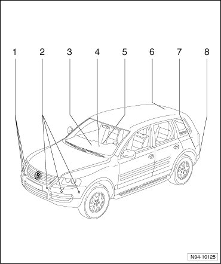

Parking Aid Assembly Overview
Parking Aid Assembly Overview

1 Right front parking aid sensor
• Right Front Parking Aid Sensor (G252) in front bumper cover
• Right Front Center Parking Aid Sensor (G253) in front bumper cover
• Right Front Inner Parking Aid Sensor (G333) in front bumper cover
• Removing and installing --> [ Front Parking Aid Sensors ] Parking Aid System
• Checking --> [ Parking Aid Control Module Output Diagnostic Test Mode ] Initial Inspection and Diagnostic Overview
2 Left front parking aid sensor
• Left Front Parking Aid Sensor (G255) in front bumper cover
• Left Front Center Parking Aid Sensor (G254) in front bumper cover
• Left Front Inner Parking Aid Sensor (G332) in front bumper cover
• Removing and installing --> [ Front Parking Aid Sensors ] Parking Aid System
• Checking --> [ Parking Aid Control Module Output Diagnostic Test Mode ] Initial Inspection and Diagnostic Overview
3 Left front parking aid display (Y13)
• Above storage compartment in center of instrument cluster
• Removing and installing --> [ Left Front Parking Aid Display ] Parking Aid System
• Checking --> [ Parking Aid Control Module Output Diagnostic Test Mode ] Initial Inspection and Diagnostic Overview
4 Parking Aid Loudspeaker (R169)
• On bracket for relay carrier and Vehicle Electrical System Control Module (J519) in front left foot well
• Removing and installing --> [ Parking Aid Speaker ] Parking Aid System
• Checking --> [ Parking Aid Control Module Output Diagnostic Test Mode ] Initial Inspection and Diagnostic Overview
• Adapting --> [ Parking Aid Control Module, Adapting ] Parking Aid Control Module, Adapting
5 Parking Aid Button (E266)
• In instrument cluster, center
• Switch in center of instrument cluster, removing and installing --> [ Center Instrument Panel Switch ] Service and Repair
6 Rear parking aid display (Y15)
• In molded headliner above rear window
• Removing and installing --> [ Rear Parking Aid Display ] Parking Aid System
• Checking --> [ Parking Aid Control Module Output Diagnostic Test Mode ] Initial Inspection and Diagnostic Overview
7 Parking Aid Control Module (J446)
• Behind the side panel trim in luggage compartment, left side
• Removing and installing --> [ Parking Aid Control Module ] Parking Aid System
8 Sensor for parking, rear
• Left Rear Parking Aid Sensor (G203) in rear bumper cover
• Left Rear Center Parking Aid Sensor (G204) in rear bumper cover
• Left Rear Inner Parking Aid Sensor (G334) in rear bumper cover
• Right Rear Parking Aid Sensor (G206) in rear bumper cover
• Right Rear Center Parking Aid Sensor (G205) in rear bumper cover
• Right Rear Inner Parking Aid Sensor (G335) in rear bumper cover
• Removing and installing --> [ Rear Parking Aid Sensors ] Parking Aid System
• Checking --> [ Parking Aid Control Module Output Diagnostic Test Mode ] Initial Inspection and Diagnostic Overview